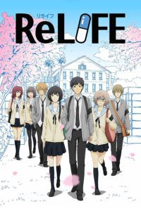
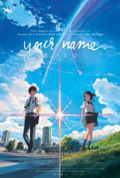
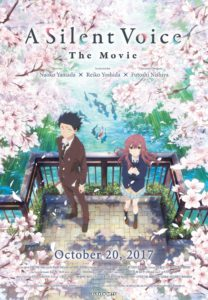

TOP 7
ReLife
Bagi Grameds yang senang dengen genre slice of life, ReLife menjadi anime romance yang layak untuk ditonton. Mengisahkan perihal Arata Kaizaki, seorang pemuda berusa 27 tahun yang hidup dipenuhi dengan penyesalan sebagai pengangguran setelah ia resign dari tempat kerja.

link nonton
TOP 8
Kimi No Nawa/Your Name
Anime romance yang satu ini tidak boleh Grameds lewatkan. Banyak kisah yang menyedihkan, membingungkan, sekaligus romantis yang daoat ditemukan dalam Kimi No Nawa. Bermula dari pertemuan gadis bernama Mitsuha Miyamizu dengan pria bernama Taki Tachibana yang tidak saling mengenal, tetapi secara ajaib, mereka bertukar tubuh, dan membuat bertumbuhnya benih-benih cinta di antara mereka. Anime buatan Makoto Shinkai ini berhasil memberikan dampak emosional yang luar biasa bagi para penontonnya.

link nonton
TOP 9
Weathering With You
Weathering With You merupakan salah satu anime romance terbaik pada tahun 2019. Ketika perilisannya, anime ini telah menuai banyak atensi serta ulasan positif. Hal tersebu dikarenakan, Weathering With You disutradarai oleh sutradara yang sama dengan film Kimi No Na Wa yang meraih kesuksesan pada tahun 2016. Setelah penayangannya, terbukti Weathering With You menyajikan kisah yang tidak kalah menarik.
 link nonton
link nonton
TOP 10
Koe No Katachi
anime berjudul Koe No Katachi atau Silent Voice. Anime ini menyajikan kisah asmara yang sangat emosional. Sesuai dengan judulnya, Koe No Katachi atau Silent Voice menceritakan mengenai kisah kasih seorang gadis tuli bernama Nishimiya Shouko. Di sekolah barunya, Nishimiya memperoleh perlakuan yang tidak menyenangkan dari seorang siswa laki-laki bernama Ishida Shouya.

link nonton